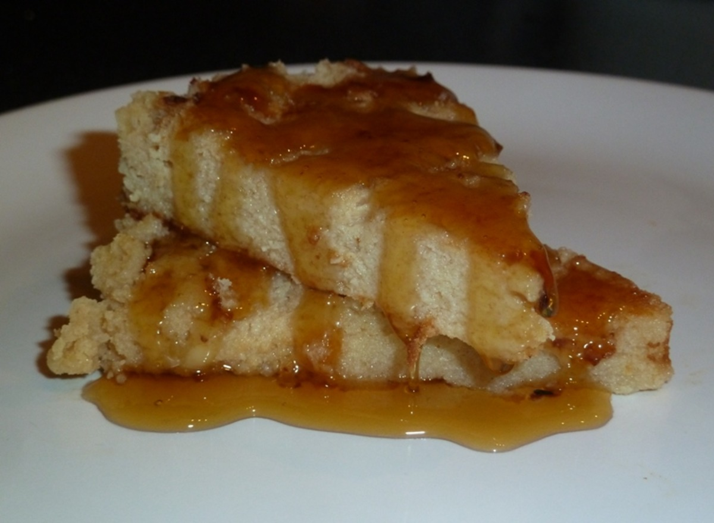

Libum (cheesecake)

Libum, according to Virgil, Ovid, Horace, and other Latin authors, was a ritual food prepared as an annual
offering to the gods. There were many ways to prepare it. Virgil writes of a libum offered with milk to Priapus;
Ovid of one prepared with millet for Vesta, of another eaten with honey for Liber. In the latter case, the
author specifies that the libum is prepared by an old woman and split, still hot, between the faithful and the
god, identified with Bacchus and considered the discoverer of honey and inventor of beekeeping.
Ingredients
- 1/2 cup plain all-purpose flour
- 1 cup ricotta cheese
- 1 egg, beaten
- bay leaves
- 1/2 cup clear honey
Steps
-
Sift the flour in a mixing bowl.
-
Beat the cheese until soft, stir into the flour.
-
Add the beaten egg to the flour/cheese mixture, forming a soft dough.
-
Divide the dough into four and shape each piece into a bun.
-
Place on a greased baking tray with a fresh bay leaf underneath.
-
Heat the oven to 375F/190C. Bake for 35-40 minutes until golden brown.
-
Warm the honey, pour into a flat plate, and place the buns on it to rest until the honey is absorbed.